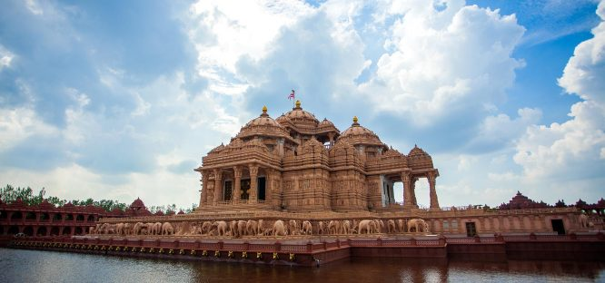

Top 19 Tourist Places in Delhi Everyone Needs to Visit
Delhi, the capital of Incredible India, is in no way any less than incredible itself. With some of the most beautiful and captivating Tourist Places in Delhi you always have something to look forward to within the city or even at the numerous Places to Visit near Delhi. From the historical Red Fort to the happening Dilli Haat and many others, the city is brimming with innumerable spots for people from all spheres of life.
Certainly then, it goes without saying that Delhi Tourism is one of the most sought attractions for travellers, both Indians and those from across the world. So let’s discover the amusing Places to Visit in Delhi, we are sure you will love.
Best Time to Visit Delhi
The best time to visit Delhi is between the month of October and March when the temperature is pleasant enough for different Things to Do in Delhi. It is also the perfect time to explore the various Places to Visit Near Delhi as well.
1. India Gate

Does this iconic site even need any introduction? Defining India, this monument which was erected in 1931 is one of the best Delhi Tourist Attractions and serves as a revered memorial for the martyrs from the World War I and Afghanistan war. Looking its best in the night, lined with beautiful lights, it is one site that is also highly frequented by the locals. India gate is one of the most beautiful places to visit in Delhi at night!
Location: Rajpath Marg, New Delhi
Timings: Open 24*7
Cost per Person: Free
TripAdvisor Rating: 4.0
2. Rashtrapati Bhawan

Although not fully accessible, Rashtrapati Bhawan, the residence of President of India, is still one of the best Delhi sightseeing places and a popular tourist place near Delhi. Spread in a vast area of 200,000 sq. ft. with 340 rooms, a painstakingly manicured presidential gardens or Mughal Gardens, staff quarters, stables, and enormous open spaces, this monument is surely a must visit Delhi Attraction.
Location: Rashtrapati Bhawan, President’s Estate, New Delhi
Timings: 09:00 am to 04:00 pm daily but the gardens including Mughal Garden remains open from August to March- Friday to Sunday
Entry fee: Approx. Rs. 40- 50 per head for individuals and groups with members less than 30, and Rs. 1,200 for groups of 30 members
TripAdvisor Rating: 4.5
3. Agrasen Ki Baoli

Made extra popular by Amir Khan’s PK, Agrasen or Ugrasen ki Baoli is one of most fascinating Tourist Places in Delhi. This lovely step that is 60 m long and about 15 m wide, is not just famous for its brilliant architecture and appeal, but also the rumoured haunted activities making it the Best Place in Delhi for Friends to explore together. This haunted yet beautiful step well at Connaught place is an exciting and a popular tourist place in Delhi.
Location: Hailey Road, Near KG Marg, CP, New Delhi
Timings: 7:30 am to 6:00 pm
Cost per Person: Free
TripAdvisor Rating: 4.0
4. Jantar Mantar

One of the five giant sundials cum astronomical observatories constructed by Maharaja Jai Singh II, Jantar Mantar is a major attraction of the city, worth beholding. This astronomical observatory is one of the most fascinating places to visit in Delhi. Although, the surrounding tall buildings make it impossible to obtain accurate results now, visiting this scientific marvel is definitely one of the most popular Things to Do in Delhi.
Location: Sansad Marg, CP, New Delhi
Timings: 9:00 am to 7:00 pm
Cost per Person: Approx. Rs. 5 for Indian citizens and Rs. 100 for foreigners
TripAdvisor Rating: 4.5
5. Red Fort, Amongst Popular Tourist Places in Delhi

The face of the Indian Capital, Red Fort is a famous Tourist Places in Delhi which was built in 1638. A great Mughal monument, it is entirely made up of red sandstone and displays imposing walls, marvellous architecture, chhata bazaar, and entertaining light and sound show which are especially attractive. This epitome of Mughal era is a very popular tourist place in Delhi. The Red Fort is one of those places to visit in Delhi with friends and family.
Location: Netaji Subhash Marg, Lal Qila, Chandni Chowk, New Delhi
Timings: 9:30 am to 4:30 pm daily, Mondays closed
Cost per Person:Approx. Rs. 10- 20 for Indian citizens and Rs. 1o0-200 for foreigners. The entry for children below the age of 15, is free.
TripAdvisor Rating:4.0
6. Qutub Minar

This mysterious monument, again from the Mughal era, is yet another splendid Places to Visit in Delhi. It was built by Qutub-ud-din-Aibak, hence the name and stands 73 m tall. This unique five-storied brick minaret is beautifully carved and engraved with scriptures. . The Qutub Minar is one of the most recommended places to visit in Delhi.
Location:Mehrauli, New Delhi
Timings: 7:00 am to 5:00 pm daily
Cost per Person:Approx. Rs. 10- 20 for Indian citizens and Rs. 2o0-300 for foreigners. The entry for children below the age of 15, is free.
TripAdvisor Rating: 4.5
7. Bahai (Lotus) Temple
%20Temple.jpg)
A wonderful example of secularism, Bahai temple, famously called as Lotus temple symbolizes the unity of four religions viz. Hinduism, Islam, Buddhism and Jainism. The Bahai or Lotus Temples easily makes a spot for its self among the list of among the list of top tourist places in Delhi. Manifesting the secular faith of Bahai community, this magnificent temple has its doors opened for people of religions and beliefs.
Location: Lotus Temple Rd, Bahapur, Shambhu Dayal Bagh, Kalkaji, New Delhi
Timings: Remains open on all days except Monday. Timings in summers is 9:00 am to 7:00 pm and in winters, 9:00 am to 5:30
Cost per Person: Free
TripAdvisor Rating: 4.0
8.Gurudwara Bangla Sahib

A highly popular religious site visited not just by the Sikh community but the masses, it is both a peaceful spiritual abode and a famous Delhi Tourist Attraction. Built-in 1783 by a Sikh general Baghel Singh, the gurudwara complex consists of a lovely Sarovar, a school, hospital museum and a library as well. This peaceful tourist place is a must visit tourist place near Delhi.
Location: Bangla Sahib Rd, Near GPO, Hanuman Road Area, CP, New Delhi
Timings: Open 24*7
Cost per Person: Free
TripAdvisor Rating: 4.5
9. Jama Masjid

Among the most impressive Tourist Places in Delhi is Jama Masjid, an architectural marvel which also happens to be India’s largest mosque. With a capacity of holding about 25,000 people at a time, the mosque is among the first creations of Shah Jahan. It has four towers of which the southern one gives you an absolutely stunning view of the city. To enter the mosque, you need to follow a specific dress code or need to hire an outfit vended at the premises. This architectural marvel by Shah Jahan should definitely be a part of your list among the places to visit in Delhi.
Location: Meena Bazaar, Jama Masjid, Chandni Chowk, New Delhi
Timings: 7:00 am to 12:00 pm & 1:30 to 6:30 pm
Cost per Person: Free except for videography which is chargeable at approx. Rs. 200- 400
TripAdvisor Rating: 3.5
10. Humayun’s Tomb

Declared a World Heritage Site by UNESCO, Humayun’s Tomb is a gorgeous work of art, commissioned by the wife of Humayun, Hamida Banu Begum. Built in 1570, it showcases a clear influence of Persian and Central Asian styles of architecture and is an inspiration to the design of the famous Taj Mahal, a popular Tourist Places in Delhi.
Location: Mathura Road, Opposite Dargah Nizamuddin, New Delhi
Timings: 6:00 am to 6:00 pm
Cost per Person: Approx. Rs. 30 for Indians & Rs. 500 for Foreigners
TripAdvisor Rating: 4.5
11. Akshardham Temple
Built not long back, Swaminarayan Akshardham Temple is the largest Hindu temple and one of the most gorgeous Delhi Sightseeing Places. Constructed in pink stone and marble, it is indeed one of the Best Places in Delhi for Family tours. For those who wish to visit the night show, the Akshardham Temple is one of the beautiful tourist places in Delhi to visit at night.
Location: NH 24, Akshardham Setu, New Delhi
Timings: 9:30 am to 6:30 pm, Mondays closed
Cost per Person: Free, with a separate fee for viewing exhibitions.
TripAdvisor Rating: 4.5
Delhi Parks & Museums
Tourist Places in Delhi Offering Unmatched Amusement
12. Lodhi Garden
Along with historical tombs dating back to the 15th Century, skilfully cropped gardens and some of the most picturesque locations in the region apt for photography, Lodhi Gardens is definitely a must-visit Delhi Sightseeing Place. You can witness a lot of historical monuments at this tourist place in Delhi. It offers a great opportunity for a memorable picnic with your loved ones, striking off a great Thing to Do in Delhi from your bucket list.
Location: Lodhi Rd, Lodhi Gardens, Lodhi Estate, New Delhi
Timings: 6:00 am to 7:30 pm
Cost per Person: Free
TripAdvisor Rating: 4.5
13. Garden of Five Senses
A venture of Delhi Tourism, Garden of Five Senses is an exquisitely built theme park with numerous attractions worth beholding. With pretty pools of water lilies, solar energy parks, Khas Bagh garden, herb garden etc. it is one of the best places to visit in delhi with friends and family. The romantic aura about this place also adds this place among the Best Places in Delhi for Couples.
Location: Western Marg, Near Saket Metro Station, Said-Ul-Ajaib Village, New Delhi
Timings: 9:00 am to 7:00 pm in summers & 9:00 am to 6:00 pm in winters
Cost per Person: Children up to the age of 12 years & senior citizens approx. Rs. 10- 20 & others Rs. 30- 40
TripAdvisor Rating: 3.5
14. Crafts Museum
Another of an impressive Tourist Places in Delhi, Crafts Museum is a vintage museum constructed as a theme village. This vintage museum is one of the most explorable tourist places in Delhi. Offering an inimitable experience of village life you can enjoy a lot of exciting Things to Do in Delhi at this spot, including the sight of beautifully crafted temple chariot and beguiling Gujrati Haveli, breakfast at Café Lota and shopping for handicrafts from local artisans.